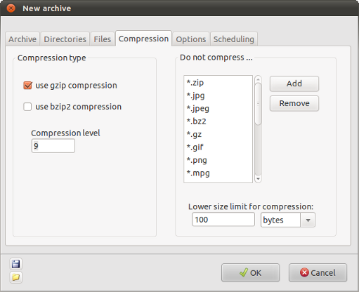

| Prev | Home | Next |
The "Compression" tab of the "New archive" window allows you decide whether files will be compressed and to decide if the compression should be applied to all files.

Compression type - Dar can compress files using the gzip or bzip2 algorithms. The bzip2 algorithm can produce smaller files but is noticeably slower. The compression level of both algorithms can be adjusted by setting it at a value between 1 and 9. 9 produces maximum compression, meaning slower processing, while 1 results in less compression and faster processing.
Do not compress.. - Many files on your system are already compressed and attempting to compress them makes archiving slower for little or no reduction in archive size. Even if a compression method has been selected Dar will not attempt to compress files which match file masks or names which are entered here.
Compression is less efficient when used on small files. For this reason it is possible to specify a lower size limit for compression. Files smaller than this will not be compressed.
| Prev | Home | Next |
| File settings | Up | General options |